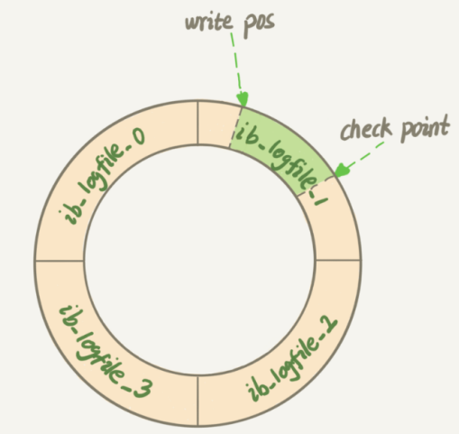

本文最后更新于：2020年8月8日 凌晨
文章对 MySQL 基础做归纳总结。
写在前面
写数据库操作的时候，须做到心里有数，知道每个语句执行的结果，代码会产生什么样的资源消耗，语句的执行会占用哪些锁，分析语句执行速度慢的原因等。
不能仅仅满足于执行结果是否正确。因为这样会限制提高数据库的技术水平增长，限制提高基于数据库的业务架构能力。一个语句可以试，一个五条语句的事务分析就要试很多次，一个复杂业务系统的数据库设计，就无法试出来。
原理有助于剪枝，排除掉那些理论上明显错误的方案，这样才有精力真的去试那些有限的、可能正确的方案。我们不需要特别精通数据库，但是多知道一些原理，就能多一些剪枝，架构设计就能少一些错误选项的干扰，项目架构正确的可能性就更高。
剪枝的过程也能进一步印证学习的时间可以节省工作的时间。当然，“原理”是一个很大的概念，有的原理更接近实战，有的远一些。
范式
MySQL 基础架构
简单来说 MySQL 主要分为 Server 层和存储引擎层：
- Server 层：主要包括连接器、查询缓存、分析器、优化器、执行器等，涵盖 MySQL 的大多数核心服务功能，以及所有的内置函数（如日期、时间、数学和加密函数等），所有跨存储引擎的功能都在这一层实现，比如存储过程、触发器、视图等。还有一个通用的日志模块 bin log 日志模块；
- 存储引擎： 主要负责数据的存储和读取，采用可以替换的插件式架构，支持 InnoDB、MyISAM、Memory 等多个存储引擎，其中 InnoDB 引擎有自有的日志模块 redo log 模块。现在最常用的存储引擎是 InnoDB，它从 MySQL 5.5.5 版本开始作为默认存储引擎。
连接器、查询缓存、分析器、优化器、执行器的主要功能如下：
- 连接器： 管理连接，权限认证；
- 查询缓存： 执行查询语句的时候，会先查询缓存，命中则直接返回结果（功能不太实用，MySQL 8.0 后移除）；
- 分析器： 词法分析，语法分析；
- 优化器： 执行计划生成，索引选择；
- 执行器： 操作引擎，返回结果；
一条SQL语句在MySQL中如何执行
日志
binlog
MySQL 整体来看分为两块：Server 层主要和 MySQL 功能层面相关；引擎层负责存储相关的具体事宜。Server 层的日志称为 binlog，归档日志，有时候也叫做二进制日志。
内容：逻辑格式的日志，可以简单认为是执行过的事务中的 sql 语句。但又不完全是 sql 语句这么简单，而是包括了执行的 sql 语句（增删改）反向的信息（作为回滚用），意味着 delete 对应着 delete 本身和其反向的 insert；update对应着 update 执行前后的版本的信息；insert 对应着 delete 和 insert 本身的信息。
作用：用于复制。在主从复制中，从库利用主库上的 binlog 进行重播，实现主从同步。用于数据库的基于时间点的还原。
binlog 有三种模式：Statement（基于 sql 语句的复制）、Row（基于行的复制）以及 Mixed（混合模式）。
redo log
概念：重做日志。
在 MySQL 中，如果每一次的更新操作都需要写进磁盘，然后磁盘也要找到对应的那条记录，然后再更新，整个过程 IO 成本、查找成本都很高。为了解决这个问题，可以使用 WAL(Write-Ahead Logging) 技术。它的关键点就是先写日志，再写磁盘。具体来说，当有一条记录需要更新的时候，InnoDB 引擎就会先把记录写到 redo log 里面，并更新内存，这个时候更新就算完成了。同时，InnoDB 引擎会在适当的时候，将这个操作记录更新到磁盘里面，而这个更新往往是在系统比较空闲的时候做。
内容：物理格式的日志，记录的是物理数据页面的修改的信息，redo log 是顺序写入redo log file的物理文件中的。
作用：保证即使数据库发生异常重启，之前提交的记录都不会丢失，达到 crash-safe 的目的。
InnoDB 的 redo log 是固定大小的，比如可以配置为一组 4 个文件，每个文件的大小是 1GB，那么总共就可以记录 4GB 的操作。从头开始写，写到末尾就又回到开头循环写，如下图所：

write pos 是当前记录的位置，一边写一边后移，写到第 3 号文件末尾后就回到 0 号文件开头。checkpoint 是当前要擦除的位置，也是往后推移并且循环的，擦除记录前要把记录更新到数据文件。
write pos 和 checkpoint 之间的是还空着的部分，可以用来记录新的操作。如果 write pos 追上 checkpoint，表示满了，这时候不能再执行新的更新，得停下来先擦掉一些记录，把 checkpoint 推进一下。
undo log
概念：回滚日志。
内容：逻辑格式的日志，在执行 undo 的时候，仅仅是将数据从逻辑上恢复至事务之前的状态，而不是从物理页面上操作实现的，这一点是不同于redo log的。
作用：保存了事务发生之前的数据的一个版本，可以用于回滚，同时可以提供多版本并发控制下的读（MVCC），也即非锁定读。
redo log 与 binlog
需要 redo log 和 binlog 两份日志的原因是，最开始 MySQL 里没有 InnoDB 引擎。MySQL 自带的引擎是 MyISAM，但是 MyISAM 没有 crash-safe 的能力，binlog 日志只能用于归档。InnoDB 是另一个公司以插件形式引入 MySQL 的，既然只依靠 binlog 没有 crash-safe 能力，所以 InnoDB 使用另外一套日志系统，也就是 redo log 来实现 crash-safe 能力。
这两种日志有以下三点不同：
redo log 是 InnoDB 引擎特有的；binlog 是 MySQL 的 Server 层实现的，所有引擎都可以使用；
redo log 是物理日志，记录的是“在某个数据页上做了什么修改”；binlog 是逻辑日志，记录的是这个语句的原始逻辑，比如“给 ID=2 这一行的 c 字段加 1 ”；
redo log 是循环写的，空间固定会用完；binlog 是可以追加写入的。“追加写”是指 binlog 文件写到一定大小后会切换到下一个，并不会覆盖以前的日志；
两阶段提交
对这日志有一个基本的了解之后，再来看执行器和 InnoDB 引擎在执行下面这个简单的 update 语句时的内部流程：
#创建一个表，表中有一个主键 ID 和一个整型字段 c
mysql> create table T(ID int primary key, c int);
#将 ID=2 这一行的值加 1
mysql> update T set c=c+1 where ID=2; 1. 执行器先找引擎取 ID=2 这一行。ID 是主键，引擎直接用树搜索找到这一行。如果 ID=2 这一行所在的数据页本来就在内存中，就直接返回给执行器；否则，需要先从磁盘读入内存，然后再返回；
2. 执行器拿到引擎给的行数据，把这个值加上 1，比如原来是 N，现在就是 N+1，得到新的一行数据，再调用引擎接口写入这行新数据；
3. 引擎将这行新数据更新到内存中，同时将这个更新操作记录到 redo log 里面，此时 redo log 处于 prepare 状态。然后告知执行器执行完成了，随时可以提交事务；
4. 执行器生成这个操作的 binlog，并把 binlog 写入磁盘；
5. 执行器调用引擎的提交事务接口，引擎把刚刚写入的 redo log 改成提交（commit）状态，更新完成。
最后三步将 redo log 的写入拆成了两个步骤：prepare 和 commit，这就是”两阶段提交”。两阶段提交的目的，是为了 bin log和redo log 两份日志之间的逻辑一致。要说明这个问题，需要考虑这个问题：怎样让数据库恢复到半个月内任意一秒的状态？
我们知道，binlog 会以“追加写”的形式记录所有的逻辑操作。如果要达到半个月内的数据库状态都可以恢复的目的，那么备份系统中必须要保存最近半个月的所有 binlog，同时系统会定期做整库备份。这里的“定期”取决于系统的重要性，可以是一天一备，也可以是一周一备。
当需要恢复到指定的某一秒时，比如某天下午两点发现中午十二点有一次误删表，需要找回数据，那么可以这么做：
- 找到最近的一次全量备份，从这个备份恢复到临时库；
- 从备份的时间点开始，将备份的 binlog 依次取出来，重放到中午误删表之前的那个时刻。
这样临时库就跟误删之前的线上库一样了，然后可以把表数据从临时库取出来，按需要恢复到线上库去。这就是数据恢复过程。
那么为什么日志需要“两阶段提交”。可以用反证法解释。由于 redo log 和 binlog 是两个独立的逻辑，如果不用两阶段提交，要么就是先写完 redo log 再写 binlog，或者采用反过来的顺序。看看这两种方式会有什么问题。
以 update 语句作为例子。假设当前 ID=2 的行，字段 c 的值是 0，再假设执行 update 语句过程中在写完第一个日志后，第二个日志还没有写完期间发生了 crash，会出现什么情况呢？
先写 redo log 后写 binlog：
假设在 redo log 写完，binlog 还没有写完的时候，MySQL 进程异常重启。由于 redo log 写完之后，系统即使崩溃，仍然能够把数据恢复回来，所以恢复后这一行 c 的值是 1。但是由于 binlog 没写完就 crash 了，这时候 binlog 里面就没有记录这个语句。因此，之后备份日志的时候，存起来的 binlog 里面就没有这条语句。那么，如果需要用这个 binlog 来恢复临时库的话，由于这个语句的 binlog 丢失，这个临时库就会少了这一次更新，恢复出来的这一行 c 的值就是 0，与原库的值不同。
先写 binlog 后写 redo log：
如果在 binlog 写完之后 crash，由于 redo log 还没写，崩溃恢复以后这个事务无效，所以这一行 c 的值是 0。但是 binlog 里面已经记录了“把 c 从 0 改成 1”这个日志。所以，在之后用 binlog 来恢复的时候就多了一个事务出来，恢复出来的这一行 c 的值就是 1，与原库的值不同。
所以，如果不使用“两阶段提交”，那么数据库的状态就有可能和用它的日志恢复出来的库的状态不一致。这个过程和场景来不仅用于误操作后恢复数据，在需要扩容的时候，也就是需要再多搭建一些备库来增加系统的读能力的时候，现在常见的做法也是用全量备份加上应用 binlog 来实现的，这个“不一致”就会导致线上出现主从数据库不一致的情况。
简单说，redo log 和 binlog 都可以用于表示事务的提交状态，而两阶段提交就是让这两个状态保持逻辑上的一致。
事务
事务是指构成单一逻辑工作单元的操作的集合逻辑上的一组操作，通俗来说要么都执行，要么都不执行。
事务最经典的例子就是转账。假如小明要给小红转账1000元，会涉及到两个关键操作：小明的余额减少1000元，小红的余额增加1000元。万一在这两个操作之间突然出现错误比如银行系统崩溃，导致小明余额减少而小红的余额没有增加，这样就不对了。事务就是保证这两个关键操作要么都成功，要么都要失败。
事务特性
原子性：事务是最小的执行单位，不允许分割。事务的原子性确保动作要么全部完成，要么完全不起作用；
一致性：事务执行前后数据库保持约束一致性和业务逻辑一致性；
- 执行事务前后，数据保持一致。例如转账业务中，事务是否成功，转账者和收款人的总额应该是不变的；
隔离性：在事务并发执行时，各个事务都感觉不到其他事务的存在；
- 并发访问数据库时，一个事务不被其他事务所干扰；
持久性：事务被提交后，它对数据库的更改是持久的，即使数据库系统崩溃也能恢复；
并发事务存在的问题
在典型的应用程序中，多个事务并发运行，经常会有操作相同的数据来完成各自的任务的场景，即多个用户对统一数据进行操作。并发虽然是必须的，但可能会导致以下的问题：
- 脏读（Dirty read）： 当一个事务正在访问数据并且对数据进行了修改，而这种修改还没有提交到数据库中，这时另外一个事务也访问了这个数据，然后使用了这个数据。因为这个数据是还没有提交的数据，那么另外一个事务读到的这个数据是“脏数据”，依据“脏数据”所做的操作可能是不正确的；
- 丢失修改（Lost to modify）： 指在一个事务读取一个数据时，另外一个事务也访问了该数据，那么在第一个事务中修改了这个数据后，第二个事务也修改了这个数据。这样第一个事务内的修改结果就被丢失，因此称为丢失修改。 例如：事务1读取某表中的数据A=20，事务2也读取A=20，事务1修改A=A-1，事务2也修改A=A-1，最终结果A=19，事务1的修改被丢失；
- 不可重复读（Unrepeatableread）： 指在一个事务内多次读同一数据。在这个事务还没有结束时，另一个事务也访问该数据。那么，在第一个事务中的两次读数据之间，由于第二个事务的修改导致第一个事务两次读取的数据可能不太一样。这就发生了在一个事务内两次读到的数据是不一样的情况，因此称为不可重复读；
- 幻读（Phantom read）： 幻读与不可重复读类似。它发生在一个事务（T1）读取了几行数据，接着另一个并发事务（T2）插入了一些数据时。在随后的查询中，第一个事务（T1）就会发现多了一些原本不存在的记录，就好像发生了幻觉一样，所以称为幻读。
不可重复度和幻读的区别
不可重复读的重点是修改，幻读的重点在于新增或者删除。
事务1中的A先生读取自己的工资为 1000 的操作还没完成，事务2中的B先生就修改了A的工资为2000，导致A再读自己的工资时工资变为 2000，这是不可重复读；
某工资单表中工资大于3000的有4人，事务1读取了所有工资大于3000的人，共查到4条记录，这时事务2又插入了一条工资大于3000的记录，事务1再次读取时查到的记录就变为了5条，这样就导致了幻读。
事务隔离级别
MySQL 标准定义了四个隔离级别：
- READ-UNCOMMITTED(读取未提交)： 最低的隔离级别，一个事务还没提交时，它做的变更就能被别的事务看到。可能会导致脏读、幻读或不可重复读；
- READ-COMMITTED(读取已提交)： 一个事务提交之后，它做的变更才会被其他事务看到。可以阻止脏读，但是幻读或不可重复读仍有可能发生；
- REPEATABLE-READ(可重复读)： 一个事务执行过程中看到的数据，总是跟这个事务在启动时看到的数据是一致的。当然在可重复读隔离级别下，未提交变更对其他事务也是不可见的。可以阻止脏读和不可重复读，但幻读仍有可能发生；
- SERIALIZABLE(可串行化)： 最高的隔离级别，对于同一行记录，“写”会加“写锁”，“读”会加“读锁”。当出现读写锁冲突的时候，后访问的事务必须等前一个事务执行完成，才能继续执行。该级别可以防止脏读、不可重复读以及幻读；
锁机制
今天我要跟你聊聊 MySQL 的锁。数据库锁设计的初衷是处理并发问题。作为多用户共享的资源，当出现并发访问的时候，数据库需要合理地控制资源的访问规则。而锁就是用来实现这些访问规则的重要数据结构。
根据加锁的范围，MySQL 里面的锁大致可以分成全局锁、表级锁和行锁三类。今天这篇文章，我会和你分享全局锁和表级锁。而关于行锁的内容，我会留着在下一篇文章中再和你详细介绍。
这里需要说明的是，锁的设计比较复杂，这两篇文章不会涉及锁的具体实现细节，主要介绍的是碰到锁时的现象和其背后的原理。
全局锁
全局锁就是对整个数据库实例加锁。MySQL 提供了一个加全局读锁的方法，命令是 Flush tables with read lock (FTWRL)。
当需要让整个库处于只读状态的时候，可以使用这个命令，之后其他线程的以下语句会被阻塞：
- 数据更新语句（数据的增删改）；
- 数据定义语句（包括建表、修改表结构等）；
- 更新类事务的提交语句。
全局锁的典型使用场景是，做全库逻辑备份，也就是把整库每个表都 select 出来存成文本。
对于全部是 InnoDB 引擎的库，建议选择使用–single-transaction 参数，对应用会更友好。
表级锁
MySQL 里面表级别的锁有两种：一种是表锁，一种是元数据锁（meta data lock，MDL)。
- 表锁的语法是 lock tables … read/write。与 FTWRL 类似，可以用 unlock tables 主动释放锁，也可以在客户端断开的时候自动释放。需要注意，lock tables 语法除了会限制别的线程的读写外，也限定了本线程接下来的操作对象；
- 例如，如果在某个线程 A 中执行 lock tables t1 read, t2 write; 这个语句，则其他线程写 t1、读写 t2 的语句都会被阻塞。同时，线程 A 在执行 unlock tables 之前，也只能执行读 t1、读写 t2 的操作。连写 t1 都不允许，自然也不能访问其他表；
- 在没有出现更细粒度的锁的时候，表锁是最常用的处理并发的方式。而对于 InnoDB 这种支持行锁的引擎，一般不使用 lock tables 命令来控制并发，毕竟锁住整个表的影响面太大。
- MDL（metadata lock)。MDL 不需要显式使用，在访问一个表的时候会被自动加上。MDL 的作用是保证读写的正确性。例如，如果一个查询正在遍历一个表中的数据，执行期间另一个线程对这个表结构做变更，删了一列，那么查询线程拿到的结果跟表结构对不上，肯定是不行的。因此，MySQL 5.5 版本中引入了 MDL，当对一个表做增删改查操作的时候，加 MDL 读锁；当要对表做结构变更操作的时候，加 MDL 写锁。
读锁之间不互斥，因此可以有多个线程同时对一张表增删改查。
读写锁之间、写锁之间是互斥的，用来保证变更表结构操作的安全性。因此，如果有两个线程要同时给一个表加字段，其中一个要等另一个执行完才能开始执行。
虽然 MDL 锁是系统默认会加的，但是有一些问题不可以忽略。经常有人掉到这个坑里：给一个小表加个字段，导致整个库挂了。
我们知道，给一个表加字段，或者修改字段，或者加索引，需要扫描全表的数据。在对大表操作的时候，肯定会特别小心，以免对线上服务造成影响。而实际上，即使是小表，操作不慎也会出问题。对于下面的操作序列，假设表 t 是一个小表。
注：实验环境是 MySQL 5.6。
session A 先启动，这时候会对表 t 加一个 MDL 读锁。由于 session B 需要的也是 MDL 读锁，因此可以正常执行。之后 session C 会被 blocked，因为 session A 的 MDL 读锁还没有释放，而 session C 需要 MDL 写锁，因此只能被阻塞。
如果只有 session C 自己被阻塞还没什么关系，但是之后所有要在表 t 上新申请 MDL 读锁的请求也会被 session C 阻塞。因为所有对表的增删改查操作都需要先申请 MDL 读锁，就都被锁住，等于这个表现在完全不可读写了。
如果某个表上的查询语句频繁，而且客户端有重试机制，也就是说超时后会再起一个新 session 再请求的话，这个库的线程很快就会爆满。
事务中的 MDL 锁，在语句执行开始时申请，但是语句结束后并不会马上释放，而会等到整个事务提交后再释放。
基于上面的分析，讨论一个问题，如何安全地给小表加字段？首先要解决长事务，事务不提交，就会一直占着 MDL 锁。在 MySQL 的 information_schema 库的 innodb_trx 表中，可以查到当前执行中的事务。如果要做 DDL 变更的表刚好有长事务在执行，要考虑先暂停 DDL，或者 kill 掉这个长事务。
但考虑一下这个场景。如果要变更的表是一个热点表，虽然数据量不大，但是上面的请求很频繁，而不得不加个字段，该怎么做呢？
这时候 kill 可能未必管用，因为新的请求马上就来了。比较理想的机制是，在 alter table 语句里面设定等待时间，如果在这个指定的等待时间里面能够拿到 MDL 写锁最好，拿不到也不要阻塞后面的业务语句，先放弃。之后开发人员或者 DBA 再通过重试命令重复这个过程。
MariaDB 已经合并了 AliSQL 的这个功能，所以这两个开源分支目前都支持 DDL NOWAIT/WAIT n 这个语法。
ALTER TABLE tbl_name NOWAIT add column ...
ALTER TABLE tbl_name WAIT N add column ...表锁一般是在数据库引擎不支持行锁的时候才会被用到的。如果应用程序里有 lock tables 这样的语句，需要追查一下，比较可能的情况是：
- 系统现在还在用 MyISAM 这类不支持事务的引擎，那要安排升级换引擎；
- 引擎升级了，但是代码还没升级。业务开发把 lock tables 和 unlock tables 改成 begin 和 commit，问题就解决了。
MDL 会直到事务提交才释放，在做表结构变更的时候，一定要小心不要导致锁住线上查询和更新。
行级锁
MySQL 的行锁是在引擎层由各个引擎自己实现的。但并不是所有的引擎都支持行锁，比如 MyISAM 引擎就不支持行锁。不支持行锁意味着并发控制只能使用表锁，对于这种引擎的表，同一张表上任何时刻只能有一个更新在执行，这就会影响到业务并发度。
InnoDB 支持行锁，这也是 MyISAM 被 InnoDB 替代的重要原因之一。
行锁就是针对数据表中行记录的锁。比如事务 A 更新了一行，而这时候事务 B 也要更新同一行，则必须等事务 A 的操作完成后才能进行更新。
在下面的操作序列中，事务 B 的 update 语句执行时会是什么现象呢？假设字段 id 是表 t 的主键。
这个问题的结论取决于事务 A 在执行完两条 update 语句后，持有哪些锁，以及在什么时候释放。可以验证一下：实际上事务 B 的 update 语句会被阻塞，直到事务 A 执行 commit 之后，事务 B 才能继续执行。
事务 A 持有的两个记录的行锁，都是在 commit 的时候才释放的。
也就是说，在 InnoDB 事务中，行锁是在需要的时候才加上的，但并不是不需要了就立刻释放，而是要等到事务结束时才释放。这个就是两阶段锁协议。
开发的时候要正确安排事务的语句，基本原则是：如果事务中需要锁多个行，要把最可能造成锁冲突、最可能影响并发度的锁尽量往后放。
例如，要实现一个电影票在线交易业务，顾客 A 要在影院 B 购买电影票。简化一点，这个业务需要涉及到以下操作：
- 从顾客 A 账户余额中扣除电影票价；
- 给影院 B 的账户余额增加这张电影票价；
- 记录一条交易日志。
完成这个交易，需要 update 两条记录，并 insert 一条记录。为保证交易的原子性，要把这三个操作放在一个事务中。如何安排这三个语句在事务中的顺序？
试想如果同时有另外一个顾客 C 要在影院 B 买票，那么这两个事务冲突的部分就是语句 2 了。因为它们要更新同一个影院账户的余额，需要修改同一行数据。
根据两阶段锁协议，不论怎样安排语句顺序，所有的操作需要的行锁都是在事务提交的时候才释放的。所以，如果把语句 2 安排在最后，比如按照 3、1、2 这样的顺序，那么影院账户余额这一行的锁时间就最少。这就最大程度地减少了事务之间的锁等待，提升了并发度。
这样设计的话，影院余额这一行的行锁在一个事务中不会停留很长时间。但是，这并没有完全解决困扰。如果这个影院做活动，可以低价预售一年内所有的电影票，而且这个活动只做一天。于是在活动时间开始的时候，MySQL 可能就挂了，服务器的 CPU 消耗可能接近 100%，但整个数据库每秒就执行不到 100 个事务。这就涉及死锁和死锁检测了。
死锁和死锁检测
当并发系统中不同线程出现循环资源依赖，涉及的线程都在等待别的线程释放资源时，就会导致这几个线程都进入无限等待的状态，称为死锁。减少死锁的主要方向，就是控制访问相同资源的并发事务量。这里用数据库中的行锁举个例子。
这时候，事务 A 在等待事务 B 释放 id=2 的行锁，而事务 B 在等待事务 A 释放 id=1 的行锁。 事务 A 和事务 B 在互相等待对方的资源释放，就是进入了死锁状态。当出现死锁以后，有两种策略：
直接进入等待，直到超时。这个超时时间可以通过参数 innodb_lock_wait_timeout 来设置；
发起死锁检测，发现死锁后，主动回滚死锁链条中的某一个事务，让其他事务得以继续执行。将参数 innodb_deadlock_detect 设置为 on，表示开启这个逻辑。
在 InnoDB 中，innodb_lock_wait_timeout 的默认值是 50s，意味着如果采用第一个策略，当出现死锁以后，第一个被锁住的线程要过 50s 才会超时退出，然后其他线程才有可能继续执行。对于在线服务来说，这个等待时间往往是无法接受的。但是又不可能直接把这个时间设置成一个很小的值，比如 1s。这样当出现死锁的时候，确实很快就可以解开，但如果不是死锁，而是简单的锁等待呢？所以，超时时间设置太短的话，会出现很多误伤。
所以，正常情况下还是要采用第二种策略，即：主动死锁检测，而且 innodb_deadlock_detect 的默认值本身就是 on。主动死锁检测在发生死锁的时候，是能够快速发现并进行处理的，但是它也是有额外负担的。可以想象一下这个过程：每当一个事务被锁的时候，就要看看它所依赖的线程有没有被别人锁住，如此循环，最后判断是否出现了循环等待，也就是死锁。
那如果是上面说到的所有事务都要更新同一行的场景呢？每个新来的被堵住的线程，都要判断会不会由于自己的加入导致了死锁，这是一个时间复杂度是 O(n) 的操作。假设有 1000 个并发线程要同时更新同一行，那么死锁检测操作就是 100 万这个量级的。虽然最终检测的结果是没有死锁，但是这期间要消耗大量的 CPU 资源。因此，会看到 CPU 利用率很高，但是每秒却执行不了几个事务。
根据上面的分析，讨论怎么解决由这种热点行更新导致的性能问题。
问题的症结在于，死锁检测要耗费大量的 CPU 资源。一种头痛医头的方法，就是如果能确保这个业务一定不会出现死锁，可以临时把死锁检测关掉。但是这种操作本身带有一定的风险，因为业务设计的时候一般不会把死锁当做一个严重错误，毕竟出现死锁了，就回滚，然后通过业务重试一般就没问题了，这是业务无损的。而关掉死锁检测意味着可能会出现大量的超时，这是业务有损的。另一个思路是控制并发度。根据上面的分析，如果并发能够控制住，比如同一行同时最多只有 10 个线程在更新，那么死锁检测的成本很低，就不会出现这个问题。一个直接的想法就是，在客户端做并发控制。但是，很快发现这个方法不太可行，因为客户端很多。对于一个有 600 个客户端的应用，即使每个客户端控制到只有 5 个并发线程，汇总到数据库服务端以后，峰值并发数也可能要达到 3000。
因此，并发控制要做在数据库服务端。如果有中间件，可以考虑在中间件实现；如果团队有能修改 MySQL 源码的人，也可以做在 MySQL 里面。基本思路就是，对于相同行的更新，在进入引擎之前排队。这样在 InnoDB 内部就不会有大量的死锁检测工作了。
如果团队里暂时没有数据库方面的专家，不能实现这样的方案，可以考虑从设计上优化这个问题。
考虑通过将一行改成逻辑上的多行来减少锁冲突。还是以影院账户为例，可以考虑放在多条记录上，比如 10 个记录，影院的账户总额等于这 10 个记录的值的总和。这样每次要给影院账户加金额的时候，随机选其中一条记录来加。这样每次冲突概率变成原来的 1/10，可以减少锁等待个数，也就减少了死锁检测的 CPU 消耗。这个方案看上去是无损的，但其实这类方案需要根据业务逻辑做详细设计。如果账户余额可能会减少，比如退票逻辑，那么这时候就需要考虑当一部分行记录变成 0 的时候，代码要有特殊处理。
表级锁和行级锁对比
- 表级锁：对当前操作的整张表加锁，实现简单，资源消耗也比较少，加锁快，不会出现死锁。其锁定粒度最大，触发锁冲突的概率最高，并发度最低，MyISAM 和 InnoDB引擎都支持表级锁；
- 行级锁：MySQL中锁定粒度最小的一种锁，只针对当前操作的行进行加锁。 行级锁能大大减少数据库操作的冲突。其加锁粒度最小，并发度高，但加锁的开销也最大，加锁慢，会出现死锁。
间隙锁
产生幻读的原因是，行锁只能锁住行，但是新插入记录这个动作，要更新的是记录之间的“间隙”。因此，为了解决幻读问题，InnoDB 只好引入新的锁，也就是间隙锁 (Gap Lock)。间隙锁，锁的就是两个值之间的空隙。
建表和初始化语句如下，这个表除了主键 id 外，还有一个索引 c，初始化语句在表中插入了 6 行数据。
CREATE TABLE `t` (
`id` int(11) NOT NULL,
`c` int(11) DEFAULT NULL,
`d` int(11) DEFAULT NULL,
PRIMARY KEY (`id`),
KEY `c` (`c`)
) ENGINE=InnoDB;
insert into t values(0,0,0),(5,5,5),
(10,10,10),(15,15,15),(20,20,20),(25,25,25);表 t 初始化插入了 6 个记录，这就产生了 7 个间隙。
这样，当执行 select * from t where d=5 for update 的时候，就不止是给数据库中已有的 6 个记录加上了行锁，还同时加了 7 个间隙锁。这样就确保了无法再插入新的记录。也就是说这时候，在一行行扫描的过程中，不仅将给行加上了行锁，还给行两边的空隙，也加上了间隙锁。数据行是可以加上锁的实体，数据行之间的间隙，也是可以加上锁的实体。但是间隙锁跟我们之前碰到过的锁都不太一样。
注：select for update 是为了在查询时，避免其他用户以该表进行插入，修改或删除等操作，造成表的不一致性。
比如行锁，分成读锁和写锁。下图就是这两种类型行锁的冲突关系，也就是说，跟行锁有冲突关系的是“另外一个行锁”。

但是间隙锁不一样，跟间隙锁存在冲突关系的，是“往这个间隙中插入一个记录”这个操作。间隙锁之间都不存在冲突关系。
如下图所示，这里 session B 并不会被堵住。因为表 t 里并没有 c=7 这个记录，因此 session A 加的是间隙锁 (5,10)。而 session B 也是在这个间隙加的间隙锁。它们有共同的目标，即：保护这个间隙，不允许插入值。但它们之间是不冲突的。

next-key lock
间隙锁和行锁合称 next-key lock，每个 next-key lock 是前开后闭区间。也就是说，表 t 初始化以后，如果用 select * from t for update 要把整个表所有记录锁起来，就形成了 7 个 next-key lock，分别是 (-∞,0]、(0,5]、……、(20, 25]、(25, +supremum]。这是因为 +∞是开区间。实现上，InnoDB 给每个索引加了一个不存在的最大值 supremum，这样才符合“都是前开后闭区间”的要求。
注：文章中，如果没有特别说明，我们把间隙锁记为开区间，把 next-key lock 记为前开后闭区间。
间隙锁和 next-key lock 的引入，解决了幻读的问题，但同时也带来了一些“困扰”。对应到这个例子的表来说，业务逻辑这样的：任意锁住一行，如果这一行不存在的话就插入，如果存在这一行就更新它的数据，代码如下：
begin;
select * from t where id=N for update;
/*如果行不存在*/
insert into t values(N,N,N);
/*如果行存在*/
update t set d=N set id=N;
commit;考虑 insert … on duplicate key update 是否可以解决问题？在有多个唯一键的时候，这个方法是不能满足需求的。
现在，只讨论这个逻辑。现象是，这个逻辑一旦有并发，就会碰到死锁。为什么这个逻辑每次操作前用 for update 锁起来，已经是最严格的模式了，为什么还会出现死锁。这里，用两个 session 来模拟并发，并假设 N=9。

其实都不需要用到后面的 update 语句，就已经形成死锁了。按语句执行顺序来分析一下：
- session A 执行 select … for update 语句，由于 id=9 这一行并不存在，因此会加上间隙锁 (5,10)；
- session B 执行 select … for update 语句，同样会加上间隙锁 (5,10)，间隙锁之间不会冲突，因此这个语句可以执行成功；
- session B 试图插入一行 (9,9,9)，被 session A 的间隙锁挡住了，只好进入等待；
- session A 试图插入一行 (9,9,9)，被 session B 的间隙锁挡住了。
至此，两个 session 进入互相等待状态，形成死锁。当然，InnoDB 的死锁检测马上就发现了这对死锁关系，让 session A 的 insert 语句报错返回了。
所以，间隙锁的引入，可能会导致同样的语句锁住更大的范围，这其实是影响了并发度的。
为了解决幻读的问题，引入了这么一大串内容，有没有更简单一点的处理方法呢。
之前分析的问题都是在可重复读隔离级别下的，间隙锁是在可重复读隔离级别下才会生效的。所以，如果把隔离级别设置为读提交的话，就没有间隙锁了。但同时，要解决可能出现的数据和日志不一致问题，需要把 binlog 格式设置为 row。这，也是现在不少公司使用的配置组合。
gap lock和next-key lock对比
InnoDB 对于行的查询使用 next-key lock；
当查询的索引含有唯一属性时，将 next-key lock 降级为record key；
有两种方式显式关闭 gap 锁：（除了外键约束和唯一性检查外，其余情况仅使用record lock）1）将事务隔离级别设置为 RC；2）将参数innodb_locks_unsafe_for_binlog设置为1。
意向锁
表级锁和行级锁可以进一步划分为共享锁（s）和排他锁（X）：
共享锁（Share Locks，简记为S）又被称为读锁；
- 其他用户可以并发读取数据，但任何事务都不能获取数据上的排他锁，直到已释放所有共享锁。若事务T对数据对象A加上S锁，则事务T只能读A；其他事务只能再对A加S锁，而不能加X锁，直到T释放A上的S锁。这就保证了其他事务可以读A，但在T释放A上的S锁之前不能对A做任何修改；
- 如果事务T对数据A加上共享锁后，则其他事务只能对A再加共享锁，不 能加排他锁。获取共享锁的事务只能读数据，不能修改数据。
排它锁（(Exclusive lock,简记为X锁)）又称为写锁。
- 若事务T对数据对象A加上X锁，则只允许T读取和修改A，其它任何事务都不能再对A加任何类型的锁，直到T释放A上的锁。它防止任何其它事务获取资源上的锁，直到在事务的末尾将资源上的原始锁释放为止。在更新操作(INSERT、UPDATE 或 DELETE)过程中始终应用排它锁；
- 如果事务T对数据A加上排他锁后，则其他事务不能再对A加任任何类型的封锁。获取排他锁的事务既能读数据，又能修改数据。
当一个事务需要给自己需要的某个资源加锁的时候，如果遇到一个共享锁正锁定着自己需要的资源的时候，自己可以再加一个共享锁，不过不能加排他锁。但是，如果遇到自己需要锁定的资源已经被一个排他锁占有之后，则只能等待该锁定释放资源之后自己才能获取锁定资源并添加自己的锁定。而意向锁的作用就是当一个事务在需要获取资源锁定的时候，如果遇到自己需要的资源已经被排他锁占用的时候，该事务可以需要锁定行的表上面添加一个合适的意向锁。如果自己需要一个共享锁，那么就在表上面添加一个意向共享锁。而如果自己需要的是某行（或者某些行）上面添加一个排他锁的话，则先在表上面添加一个意向排他锁。意向共享锁可以同时并存多个，但是意向排他锁同时只能有一个存在。
InnoDB另外的两个表级锁：
- 意向共享锁（IS）： 表示事务准备给数据行记入共享锁，事务在一个数据行加共享锁前必须先取得该表的IS锁；
- 意向排他锁（IX）： 表示事务准备给数据行加入排他锁，事务在一个数据行加排他锁前必须先取得该表的IX锁。
注：
这里的意向锁是表级锁，表示的是一种意向，仅仅表示事务正在读或写某一行记录，在真正加行锁时才会判断是否冲突。意向锁是 InnoDB 自动加的，不需要用户干预；
IX，IS是表级锁，不会和行级的X，S锁发生冲突，只会和表级的X，S发生冲突。
自增锁
自增锁(AUTO-INC Locks)是事务插入时自增列上特殊的表级别的锁。最简单的一种情况：如果一个事务正在向表中插入值，则任何其他事务必须等待，以便第一个事务插入的行接收连续的主键值。
一般把主键设置为 AUTO_INCREMENT 的列，默认情况下这个字段的值为0，InnoDB会在 AUTO_INCREMENT 修饰下的数据列所关联的索引末尾设置独占锁。在访问自增计数器时，InnoDB使用自增锁，但是锁定仅仅持续到当前SQL语句的末尾，而不是整个事务的结束，毕竟自增锁是表级别的锁，如果长期锁定会大大降低数据库的性能。由于是表锁，在使用期间，其他会话无法插入表中。
页级锁
MySQL中锁定粒度介于行级锁和表级锁中间的一种锁。表级锁速度快，但冲突多，行级冲突少，但速度慢。页级进行了折衷，一次锁定相邻的一组记录。BDB支持页级锁。开销和加锁时间界于表锁和行锁之间，会出现死锁。锁定粒度界于表锁和行锁之间，并发度一般。
索引
索引是一种用于快速查询和检索数据的数据结构。实现索引的方式却有很多种，所以就引入了索引模型的概念。可以提高读写效率的数据结构有很多，例如哈希表、有序数组和搜索树（B树， B+树等）。
- 哈希表结构适用于只有等值查询的场景；
- 有序数组在等值查询和范围查询场景中的性能就都非常优秀，有序数组索引只适用于静态存储引擎，比如保存 2017 年某个城市的所有人口信息，这类不会再修改的数据；
- 多叉树就是每个节点有多个儿子，儿子之间的大小保证从左到右递增。二叉树是搜索效率最高的，但是大多数的数据库存储并不使用二叉树。原因是索引不止存在内存中，还要写到磁盘上。一棵 100 万节点的平衡二叉树，树高 20。一次查询可能需要访问 20 个数据块。在机械硬盘时代，从磁盘随机读一个数据块需要 10 ms 左右的寻址时间。对于一个 100 万行的表，如果使用二叉树来存储，单独访问一个行可能需要 20 个 10 ms 的时间，速度太慢。为了让一个查询尽量少地读磁盘，就必须让查询过程访问尽量少的数据块。那么就不应该使用二叉树，而是要使用“N 叉”树。这里，“N 叉”树中的“N”取决于数据块的大小。以 InnoDB 的一个整数字段索引为例，这个 N 差不多是 1200。这棵树高是 4 的时候，就可以存 1200 的 3 次方个值，这已经 17 亿了。考虑到树根的数据块总是在内存中的，一个 10 亿行的表上一个整数字段的索引，查找一个值最多只需要访问 3 次磁盘。其实，树的第二层也有很大概率在内存中，那么访问磁盘的平均次数就更少了。N 叉树由于在读写上的性能优点，以及适配磁盘的访问模式，被广泛应用在数据库引擎中；
- 哈希、有序数组或 N 叉树都是不断迭代、不断优化的产物或者解决方案。数据库技术不断发展，跳表、LSM 树等数据结构也被用于引擎设计中；
使用索引既有优势也有劣势：
大部分系统的读请求总是大于写请求的，索引可以加快查询和检索数据的效率；
创建索引和维护索引需要耗费许多时间：当对表中的数据进行增删改的时候，如果数据有索引，那么索引也需要动态的修改，会降低执行效率；
占用物理存储空间：索引需要使用物理文件存储，也会耗费一定空间。
索引数据结构
B树和B+树
- B树的所有节点既存放键(key) 也存放数据(data)；B+树只有叶子节点存放 key 和 data，内节点只存放key；
- B树的叶子节点都是独立的；B+树的叶子节点有一条引用链指向与它相邻的叶子节点；
- B树的检索的过程相当于对范围内的每个节点的关键字做二分查找，可能没有到叶子节点，检索就结束了。B+树的检索效率很稳定，任何查找都需要从根节点访问到叶子节点的，叶子节点的顺序检索很明显；
Hash索引和B+树索引
Hash索引定位快：hash 索引指的就是 hash 表，最大的优点是能够在很短的时间内，根据 hash 函数定位到数据所在的位置；
Hash索引不支持顺序和范围查询，hash 索引是根据 hash 算法来定位的，对1 - 499的数据分别进行 hash 计算效果不太理想。B+树是有序的，对于范围查询比较有优势，直接遍历比500小的叶子节点就够了。
SELECT * FROM tb1 WHERE id < 500;Hash冲突问题；
InnoDB 的索引模型
在 InnoDB 中，表都是根据主键顺序以索引的形式存放的，这种存储方式的表称为索引组织表。InnoDB 使用 B+ 树索引模型，能够很好地配合磁盘的读写特性，减少单次查询的磁盘访问次数。所以数据都是存储在 B+ 树中的。
每一个索引在 InnoDB 里面对应一棵 B+ 树。假设有一个主键列为 ID 的表，表中有字段 k，并且在 k 上有索引。这个表的建表语句是：
mysql> create table T(
id int primary key,
k int not null,
name varchar(16),
index (k))engine=InnoDB;表中 R1~R5 的 (ID,k) 值分别为 (100,1)、(200,2)、(300,3)、(500,5) 和 (600,6)，两棵树的示例示意图如下。

从图中不难看出，根据叶子节点的内容，索引类型分为主键索引和非主键索引：
主键索引的叶子节点存的是整行数据。在 InnoDB 里，主键索引也被称为聚簇索引（clustered index）。
非主键索引的叶子节点内容是主键的值。在 InnoDB 里，非主键索引也被称为二级索引（secondary index）。
那么基于主键索引和普通索引的查询的区别是什么？
如果语句是 select * from T where ID=500，即主键查询方式，则只需要搜索 ID 这棵 B+ 树；
如果语句是 select * from T where k=5，即普通索引查询方式，则需要先搜索 k 索引树，得到 ID 的值为 500，再到 ID 索引树搜索一次。这个过程称为回表。
也就是说，基于非主键索引的查询需要多扫描一棵索引树。因此，应用中应该尽量使用主键查询。
索引维护
B+树为了维护索引有序性，在插入新值的时候需要做必要的维护。以上面这个图为例，如果插入新的行 ID 值为 700，则只需要在 R5 的记录后面插入一个新记录。如果新插入的 ID 值为 400，就相对麻烦了，需要逻辑上挪动后面的数据，空出位置。
而更糟的情况是，如果 R5 所在的数据页已经满了，根据 B+树的算法，这时候需要申请一个新的数据页，然后挪动部分数据过去。这个过程称为页分裂。这种情况下性能会受影响。除了性能外，页分裂操作还影响数据页的利用率。原本放在一个页的数据，现在分到两个页中，整体空间利用率降低大约 50%。
有分裂就有合并。当相邻两个页由于删除了数据，利用率很低之后，会将数据页做合并。合并的过程，可以认为是分裂过程的逆过程。
基于上面的索引维护过程说明，讨论一个案例。一些建表规范里面会说：要求建表语句里一定要有自增主键。当然事无绝对，分析一下哪些场景下应该使用自增主键，而哪些场景下不应该。
自增主键是指自增列上定义的主键，在建表语句中一般是这么定义的： NOT NULL PRIMARY KEY AUTO_INCREMENT。
插入新记录的时候可以不指定 ID 的值，系统会获取当前 ID 最大值加 1 作为下一条记录的 ID 值。
也就是说，自增主键的插入数据模式，正符合递增插入的场景。每次插入一条新记录，都是追加操作，都不涉及到挪动其他记录，也不会触发叶子节点的分裂。
而有业务逻辑的字段做主键，则往往不容易保证有序插入，这样写数据成本相对较高。
除了考虑性能外，还可以从存储空间的角度来看。假设表中确实有一个唯一字段，比如字符串类型的身份证号，那应该用身份证号做主键，还是用自增字段做主键呢？由于每个非主键索引的叶子节点上都是主键的值。如果用身份证号做主键，那么每个二级索引的叶子节点占用约 20 个字节，而如果用整型做主键，则只要 4 个字节，如果是长整型（bigint）则是 8 个字节。显然，主键长度越小，普通索引的叶子节点就越小，普通索引占用的空间也就越小。所以，从性能和存储空间方面考量，自增主键往往是更合理的选择。
有没有什么场景适合用业务字段直接做主键的呢？还是有的。比如，有些业务的场景需求是这样的：
只有一个索引；
该索引必须是唯一索引。
这就是典型的 KV 场景。由于没有其他索引，所以也就不用考虑其他索引的叶子节点大小的问题。这时候就要优先考虑“尽量使用主键查询”的原则，直接将这个索引设置为主键，可以避免每次查询需要搜索两棵树。
索引类型
主键索引
主键索引的叶子节点存的是整行的数据(聚簇索引)。数据表的主键列使用的就是主键索引。一张数据表有只能有一个主键，并且主键不能为 null，不能重复。
在 mysql 的 InnoDB 的表中，当没有显示的指定表的主键时，InnoDB 会自动先检查表中是否有唯一索引的字段，如果有，则选择该字段为默认的主键，否则 InnoDB 将会自动创建一个 6Byte 的自增主键。
非主键索引
非主键索引的叶子节点内容是主键的值。在 InnoDB 里，非主键索引也被称为二级索引，辅助索引，因为二级索引的叶子节点存储的数据是主键。通过二级索引，可以定位主键的位置。
唯一索引，普通索引，前缀索引等索引属于二级索引。
唯一索引
唯一索引(Unique Key) ：唯一索引的属性列不能出现重复的数据，但是允许数据为NULL，一张表允许创建多个唯一索引。建立唯一索引的目的大部分时候都是为了该属性列的数据的唯一性，而不是为了查询效率。
普通索引
普通索引(Index) ：普通索引的作用是快速查询数据，一张表允许创建多个普通索引，允许数据重复和NULL。
主键索引只要搜索ID这个B+Tree即可拿到数据。普通索引先搜索索引拿到主键值，再到主键索引树搜索一次(回表)。
前缀索引
前缀索引(Prefix) ：前缀索引只适用于字符串类型的数据。前缀索引是对文本的前几个字符创建索引，相比普通索引建立的数据更小， 因为只取前几个字符。
全文索引
全文索引(Full Text) ：全文索引主要是为了检索大文本数据中的关键字的信息，是目前搜索引擎数据库使用的一种技术。Mysql5.6 之前只有 MYISAM 引擎支持全文索引，5.6之后 InnoDB 也支持了全文索引。
聚集索引
聚集索引即索引结构和数据一起存放的索引。主键索引属于聚集索引。
在 Mysql 中，InnoDB 引擎的表的 .ibd文件就包含了该表的索引和数据，对于 InnoDB 引擎表来说，该表的索引(B+树)的每个非叶子节点存储索引，叶子节点存储索引和索引对应的数据。
聚集索引的优点
聚集索引的查询速度非常的快，因为整个B+树本身就是一颗多叉平衡树，叶子节点也都是有序的，定位到索引的节点，就相当于定位到了数据。
聚集索引的缺点
依赖于有序的数据 ：因为B+树是多路平衡树，如果索引的数据不是有序的，那么就需要在插入时排序，如果数据是整型还好，否则类似于字符串或 UUID 这种又长又难比较的数据，插入或查找的速度比较慢。
更新代价大 ： 如果对索引列的数据被修改时，那么对应的索引也将会被修改， 而且况聚集索引的叶子节点还存放着数据，修改代价肯定是较大的， 所以对于主键索引来说，主键一般都是不可被修改的。
非聚集索引
非聚集索引即索引结构和数据分开存放的索引。二级索引属于非聚集索引。
MYISAM 引擎的表的.MYI文件包含了表的索引，该表的索引(B+树)的每个叶子非叶子节点存储索引， 叶子节点存储索引和索引对应数据的指针，指向.MYD文件的数据。
非聚集索引的叶子节点并不一定存放数据的指针， 因为二级索引的叶子节点就存放的是主键，根据主键再回表查数据。
普通索引，唯一索引，全文索引属于非聚集索引。
非聚集索引的优点
更新代价比聚集索引要小 。非聚集索引的更新代价就没有聚集索引那么大了，非聚集索引的叶子节点是不存放数据的
非聚集索引的缺点
非聚集索引也依赖于有序的数据；
可能会二次查询（回表）：这应该是非聚集索引最大的缺点了。 当查到索引对应的指针或主键后，可能还需要根据指针或主键再到数据文件或表中查询。
覆盖索引
表的初始化语句
mysql> create table T (
ID int primary key,
k int NOT NULL DEFAULT 0,
s varchar(16) NOT NULL DEFAULT '',
index k(k))
engine=InnoDB;
insert into T values(100,1, 'aa'),(200,2,'bb'),(300,3,'cc'),(500,5,'ee'),(600,6,'ff'),(700,7,'gg');
表 T 中，如果执行 select * from T where k between 3 and 5，需要执行几次树的搜索操作，会扫描多少行？
SQL 查询语句的执行流程如下：
在 k 索引树上找到 k=3 的记录，取得 ID = 300；
再到 ID 索引树查到 ID=300 对应的 R3；
在 k 索引树取下一个值 k=5，取得 ID=500；
再回到 ID 索引树查到 ID=500 对应的 R4；
在 k 索引树取下一个值 k=6，不满足条件，循环结束。
在这个过程中，回到主键索引树搜索的过程，称为回表。可以看到，这个查询过程读了 k 索引树的 3 条记录（步骤 1、3 和 5），回表了两次（步骤 2 和 4）。
在这个例子中，由于查询结果所需要的数据只在主键索引上有，所以不得不回表。那么有没有可能经过索引优化，避免回表过程呢？
如果执行的语句是 select ID from T where k between 3 and 5，这时只需要查 ID 的值，而 ID 的值已经在 k 索引树上了，因此可以直接提供查询结果，不需要回表。也就是说，在这个查询里面，索引 k 已经“覆盖了”查询需求，这称为覆盖索引。
由于覆盖索引可以减少树的搜索次数，显著提升查询性能，所以使用覆盖索引是一个常用的性能优化手段。
需要注意的是，在引擎内部使用覆盖索引在索引 k 上其实读了三个记录，R3~R5（对应的索引 k 上的记录项），但是对于 MySQL 的 Server 层来说，它就是找引擎拿到了两条记录，因此 MySQL 认为扫描行数是 2。
基于上面覆盖索引的说明，讨论一个问题：在一个市民信息表上，是否有必要将身份证号和名字建立联合索引？
假设这个市民表的定义是这样的：
CREATE TABLE `tuser` (
`id` int(11) NOT NULL,
`id_card` varchar(32) DEFAULT NULL,
`name` varchar(32) DEFAULT NULL,
`age` int(11) DEFAULT NULL,
`ismale` tinyint(1) DEFAULT NULL,
PRIMARY KEY (`id`),
KEY `id_card` (`id_card`),
KEY `name_age` (`name`,`age`)
) ENGINE=InnoDB身份证号是市民的唯一标识。也就是说，如果有根据身份证号查询市民信息的需求，只要在身份证号字段上建立索引就够了。而再建立一个（身份证号、姓名）的联合索引，是不是浪费空间？
如果现在有一个高频请求，要根据市民的身份证号查询他的姓名，这个联合索引就有意义了。它可以在这个高频请求上用到覆盖索引，不再需要回表查整行记录，减少语句的执行时间。
当然，索引字段的维护总是有代价的。因此，在建立冗余索引来支持覆盖索引时就需要权衡考虑了。这正是业务 DBA，或者称为业务数据架构师的工作。
索引创建原则
单列索引
单列索引即由一列属性组成的索引。
联合索引
联合索引即由多列属性组成索引。
最左前缀原则
如果为每一种查询都设计一个索引，索引是不是太多了。如果现在要按照市民的身份证号去查他的家庭地址呢？虽然这个查询需求在业务中出现的概率不高，但总不能让它走全表扫描吧？反过来说，单独为一个不频繁的请求创建一个（身份证号，地址）的索引又感觉有点浪费。应该怎么做呢？
结论是：B+ 树索引结构可以利用索引的“最左前缀”，来定位记录。
为了直观地说明这个概念，用（name，age）这个联合索引来分析。

可以看到，索引项是按照索引定义里面出现的字段顺序排序的。
当逻辑需求是查到所有名字是“张三”的人时，可以快速定位到 ID4，然后向后遍历得到所有需要的结果。
如果要查的是所有名字第一个字是“张”的人，SQL 语句的条件是”where name like ‘张 %’”。这时，也能够用上这个索引，查找到第一个符合条件的记录是 ID3，然后向后遍历，直到不满足条件为止。
可以看到，不只是索引的全部定义，只要满足最左前缀，就可以利用索引来加速检索。这个最左前缀可以是联合索引的最左 N 个字段，也可以是字符串索引的最左 M 个字符。
基于上面对最左前缀索引的说明，讨论一个问题：在建立联合索引的时候，如何安排索引内的字段顺序。
这里评估标准是，索引的复用能力。因为可以支持最左前缀，所以当已经有了 (a,b) 这个联合索引后，一般就不需要单独在 a 上建立索引了。因此，第一原则是，如果通过调整顺序，可以少维护一个索引，那么这个顺序往往就是需要优先考虑采用的。
所以要为高频请求创建 (身份证号，姓名）这个联合索引，并用这个索引支持“根据身份证号查询地址”的需求。
那么，如果既有联合查询，又有基于 a、b 各自的查询呢？查询条件里面只有 b 的语句，是无法使用 (a,b) 这个联合索引的，这时候不得不维护另外一个索引，也就是说需要同时维护 (a,b)、(b) 这两个索引。
这时候，要考虑的原则就是空间了。比如上面这个市民表的情况，name 字段是比 age 字段大的 ，那建议创建一个（name,age) 的联合索引和一个 (age) 的单字段索引。
假设创建的联合索引由三个字段组成：
ALTER TABLE table ADD INDEX index_name (num,name,age)那么当查询的条件有为:num / (num AND name) / (num AND name AND age)时，索引才生效。所以在创建联合索引时，尽量把查询最频繁的那个字段作为最左(第一个)字段。查询的时候也尽量以这个字段为第一条件。
索引下推
满足最左前缀原则的时候，最左前缀可以用于在索引中定位记录。那么，那些不符合最左前缀的部分，会怎么样呢？
以市民表的联合索引（name, age）为例。如果现在有一个需求：检索出表中“名字第一个字是张，而且年龄是 10 岁的所有男孩”。那么，SQL 语句是这么写的：
mysql> select * from tuser where name like '张%' and age=10 and ismale=1;运用前缀索引规则，所以这个语句在搜索索引树的时候，只能用 “张”，找到第一个满足条件的记录 ID3。比全表扫描要好。然后要判断其他条件是否满足。
在 MySQL 5.6 之前，只能从 ID3 开始一个个回表。到主键索引上找出数据行，再对比字段值。
而 MySQL 5.6 引入的索引下推优化（index condition pushdown)， 可以在索引遍历过程中，对索引中包含的字段先做判断，直接过滤掉不满足条件的记录，减少回表次数。图 3 和图 4，是这两个过程的执行流程图。


在图 3 和 4 这两个图里面，每一个虚线箭头表示回表一次。
图 3 中，在 (name,age) 索引里面特意去掉了 age 的值，这个过程 InnoDB 并不会去看 age 的值，只是按顺序把“name 第一个字是’张’”的记录一条条取出来回表。因此，需要回表 4 次。
图 4 跟图 3 的区别是，InnoDB 在 (name,age) 索引内部就判断了 age 是否等于 10，对于不等于 10 的记录，直接判断并跳过。在这个例子中，只需要对 ID4、ID5 这两条记录回表取数据判断，就只需要回表 2 次。
索引创建注意点
最左前缀原则；
不为NULL的字段；
- 索引字段的数据应该尽量不为NULL，因为对于数据为NULL的字段，数据库较难优化。如果字段频繁被查询，但又避免不了为NULL，建议使用0,1,true,false这样语义较为清晰的短值或短字符作为替代；
被频繁查询的字段；
- 创建索引的字段应该是查询操作非常频繁的字段；
被作为WHERE条件查询的字段，应该被考虑建立索引；
经常用于连接的字段可能是一些外键列，对于外键列并不一定要建立外键，只是说该列涉及到表与表的关系。对于频繁被连接查询的字段，可以考虑建立索引，提高多表连接查询的效率；
被频繁更新的字段应该慎重建立索引；
- 虽然索引能带来查询上的效率，但是维护索引的成本也不小。如果一个字段不被经常查询，反而被经常修改，那么就更不应该建立索引；
不被经常查询的字段没有必要建立索引；
尽可能的考虑建立联合索引而不是单列索引；
- 因为索引是需要占用磁盘空间的，可以简单理解为每个索引都对应着一颗B+树。如果一个表的字段过多，索引过多，那么当这个表的数据达到一个体量后，索引占用的空间也是很多的，且修改索引时，耗费的时间也是较多的。如果是联合索引，多个字段在一个索引上，那么将会节约很大磁盘空间，且修改数据的操作效率也会提升；
注意避免冗余索引；
- 冗余索引指的是索引的功能相同。如（name,city ）和（name ）这两个索引就是冗余索引，能够命中后者的查询肯定是能够命中前者的。在大多数情况下，都应该尽量扩展已有的索引而不是创建新索引；
考虑在字符串类型的字段上使用前缀索引代替普通索引；
- 前缀索引仅限于字符串类型，较普通索引会占用更小的空间，所以可以考虑使用前缀索引带替普通索引。
大多数情况下，索引查询都是比全表扫描要快的。但是如果数据库的数据量不大，那么使用索引也不一定能够带来很大提升。
数据库有优化
当MySQL单表记录数过大时，数据库的CRUD性能会明显下降，一些常见的优化措施如下：
限定数据的范围
务必禁止不带任何限制数据范围条件的查询语句。比如：我们当用户在查询订单历史的时候，我们可以控制在一个月的范围内；读/写分离
经典的数据库拆分方案，主库负责写，从库负责读；垂直分区
根据数据库里面数据表的相关性进行拆分。 例如，用户表中既有用户的登录信息又有用户的基本信息，可以将用户表拆分成两个单独的表，甚至放到单独的库做分库；- 垂直拆分的优点：可以使得列数据变小，在查询时减少读取的Block数，减少I/O次数。此外，垂直分区可以简化表的结构，易于维护；
- 垂直拆分的缺点：主键会出现冗余，需要管理冗余列，并会引起Join操作，可以通过在应用层进行Join来解决。此外，垂直分区会让事务变得更加复杂；
水平分区
- 保持数据表结构不变，通过某种策略存储数据分片。这样每一片数据分散到不同的表或者库中，达到了分布式的目的。水平拆分可以支撑非常大的数据量；
- 水平拆分是指数据表行的拆分，表的行数超过200万行时，就会变慢，这时可以把一张的表的数据拆成多张表来存放。举个例子：我们可以将用户信息表拆分成多个用户信息表，这样就可以避免单一表数据量过大对性能造成影响；
- 水平拆分可以支持非常大的数据量。需要注意的一点是：分表仅仅是解决了单一表数据过大的问题，但由于表的数据还是在同一台机器上，其实对于提升MySQL并发能力没有什么意义，所以水平拆分最好分库；
- 水平拆分能够支持非常大的数据量存储，应用端改造也少，但 分片事务难以解决 ，跨节点Join性能较差，逻辑复杂。《Java工程师修炼之道》的作者推荐尽量不要对数据进行分片，因为拆分会带来逻辑、部署、运维的各种复杂度，一般的数据表在优化得当的情况下支撑千万以下的数据量是没有太大问题的。如果实在要分片，尽量选择客户端分片架构，这样可以减少一次和中间件的网络I/O；
- 数据库分片的两种常见方案：
- 客户端代理：分片逻辑在应用端，封装在jar包中，通过修改或者封装JDBC层来实现。当当网的 Sharding-JDBC、阿里的TDDL是两种比较常用的实现；
- 中间件代理：在应用和数据中间加了一个代理层。分片逻辑统一维护在中间件服务中。我们现在谈的 Mycat、360的Atlas、网易的DDB等等都是这种架构的实现。
数据库连接池
常见的如 java线程池、jdbc连接池、redis 连接池等是池化设计的代表实现。这种设计会初始预设资源，解决的问题就是抵消每次获取资源的消耗，如创建线程的开销，获取远程连接的开销等。
除了初始化资源，池化设计还包括如下这些特征：池子的初始值、池子的活跃值、池子的最大值等，这些特征可以直接映射到 java 线程池和数据库连接池的成员属性中。
数据库连接本质就是一个 socket 的连接。数据库服务端还要维护一些缓存和用户权限等信息，所以会占用一些内存。可以把数据库连接池看做是维护的数据库连接的缓存，以便将来需要对数据库的请求时可以重用这些连接。为每个用户打开和维护数据库连接，尤其是对动态数据库驱动的网站应用程序的请求，既昂贵又浪费资源。在连接池中，创建连接后，将其放置在池中，并再次使用它，因此不必建立新的连接。如果已经使用了所有的连接，则会建立一个新连接并将其添加到池中。连接池还减少了用户必须等待建立与数据库的连接的时间。
分库分表之后，id 主键如何处理
因为要是分成多个表之后，每个表都是从 1 开始累加，这样是不对的，我们需要一个全局唯一的 id 来支持。
生成全局 id 有下面这几种方式：
- UUID：不适合作为主键，因为太长了，并且无序不可读，查询效率低。比较适合用于生成唯一的名字的标示比如文件的名字；
- 数据库自增 id : 两台数据库分别设置不同步长，生成不重复ID的策略来实现高可用。这种方式生成的 id 有序，但是需要独立部署数据库实例，成本高，还会有性能瓶颈；
- 利用 redis 生成 id : 性能比较好，灵活方便，不依赖于数据库。但是，引入了新的组件造成系统更加复杂，可用性降低，编码更加复杂，增加了系统成本；
- Twitter的snowflake算法；
- 美团的Leaf分布式ID生成系统 ：Leaf 是美团开源的分布式ID生成器，能保证全局唯一性、趋势递增、单调递增、信息安全，里面也提到了几种分布式方案的对比，但也需要依赖关系数据库、Zookeeper等中间件。
SQL执行很慢的原因
一个 SQL 执行的很慢，要分两种情况讨论：
大多数情况下很正常，偶尔很慢，则有如下原因：
- 数据库在刷新脏页，例如 redo log 写满了需要同步到磁盘；
- 执行的时候，遇到锁，如表锁、行锁。
这条 SQL 语句一直执行的很慢，则有如下原因：
- 没有用上索引：例如该字段没有索引；由于对字段进行运算、函数操作导致无法用索引；
- 数据库选错了索引。
MyISAM 与 InnoDB
MyISAM 虽然性能极佳，而且提供了大量的特性，包括全文索引、压缩、空间函数等，但不支持事务和行级锁，而且最大的缺陷就是崩溃后无法安全恢复。
是否支持行级锁: MyISAM 只有表级锁，InnoDB 支持行级锁和表级锁，默认为行级锁。
是否支持事务和崩溃后的安全恢复： MyISAM 强调的是性能，每次查询具有原子性，执行速度比 InnoDB 更快，但是不提供事务支持。InnoDB 提供事务支持事务，外部键等高级数据库功能。 具有事务(commit)、回滚(rollback)和崩溃修复能力(crash recovery capabilities)的事务安全(transaction-safe (ACID compliant))型表。
是否支持外键：MyISAM不支持，而InnoDB支持。
是否支持MVCC：仅 InnoDB 支持。应对高并发事务, MVCC比单纯的加锁更高效;MVCC只在
READ COMMITTED和REPEATABLE READ两个隔离级别下工作;MVCC可以使用 乐观(optimistic)锁 和 悲观(pessimistic)锁来实现;各数据库中MVCC实现并不统一。推荐阅读：MySQL-InnoDB-MVCC多版本并发控制
《MySQL高性能》上面有一句话这样写到:
不要轻易相信“MyISAM比InnoDB快”之类的经验之谈，这个结论往往不是绝对的。在很多我们已知场景中，InnoDB的速度都可以让MyISAM望尘莫及，尤其是用到了聚簇索引，或者需要访问的数据都可以放入内存的应用。
一般情况下选择 InnoDB 都是没有问题的，但是某些情况下并不在乎可扩展能力和并发能力，也不需要事务支持，也不在乎崩溃后的安全恢复问题的话，选择MyISAM也是一个不错的选择。
自测题
有哪些索引类型，适用场景是是什么。
适用索引的优缺点
二叉树不适合做索引的原因
二叉树这里主要用红黑树，AVL因为旋转次数较多，一般不用。但两者都不适合索引，因为深度太大，查询慢
哈希做索引的优劣
哈希索引是有做索引的，根据哈希值确认对应位置，访问速度快，但不适合范围查询。在InnoDB中有将热点数据建立自适应哈希
说说聚簇索引和非聚簇索引
多列索引实现原理
B+具体的实现原理，B+树和B树有什么区别
简单说说数据库第3范式
如何添加索引
口述查询表中某商品单价
说说左外连接和内连接的区别
说说数据库读写分离的作用
说说事务
数据提交了会不会丢失，引出事务，和事务恢复过程
事务提交不会丢失数据，然后分析事务恢复过程
说恢复的时候，先以一个更新语句为例。会经过两层，SQL上层和存储层。然后具体讲了binlog，undo log，redo log 如何完成的过程undo log作用
原子性和MVCC
undo Log等日志会不会丢失
有可能，先写入到缓存。具体讲了undo log写入到 redo log日志中，redo log写入缓存，最后才刷新到磁盘。
提升了IO性能说说隔离级别
最左原则
说说行锁和列锁
参考资料
本博客所有文章除特别声明外，均采用 CC BY-SA 4.0 协议 ，转载请注明出处！